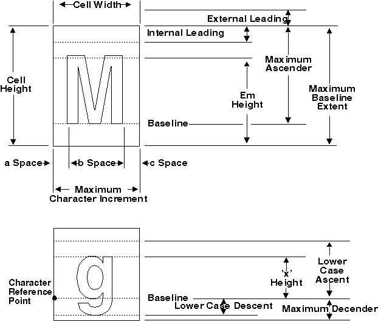

The attributes of fonts are contained in the FONTMETRICS data structure. The appearance of the actual text is influenced also by the attributes of the individual characters, which can be found in the CHARBUNDLE data structure.
An application can determine whether to use a particular font by examining its font metrics, which are the measurements that define the features of that font. The measurements are decided on by a font designer, whose most important criteria might be ensuring that the font is pleasing to the eye.
Unlike the attributes of a character string primitive, the individual font metrics attributes cannot be changed using specific GPI functions. Your application can determine the values of the current logical font attributes by calling GpiQueryFontMetrics, which accepts as input the amount of data to be returned as well as a pointer to the data area. Unlike other GPI calls, GpiQueryFontMetrics does not return the size necessary for all font metrics data. Querying with a sizeof operator, instead of calling the query twice, returns the size data.
The following table and text defines and explains the uses of the various font metric attributes.
┌──────────────────────────────┬──────────────────────────────┐ │Attribute │Description │ ├──────────────────────────────┼──────────────────────────────┤ │Face name │The full typeface name of a │ │ │font, such as Courier Bold │ │ │Italic. │ ├──────────────────────────────┼──────────────────────────────┤ │Family name │A broader equivalent of the │ │ │face name (e.g.Courier). │ ├──────────────────────────────┼──────────────────────────────┤ │Code page │The mapping between a set of │ │ │codepoints and a set of │ │ │graphic characters. │ ├──────────────────────────────┼──────────────────────────────┤ │Character cell │Controls the height and width │ │ │of outline font characters. │ ├──────────────────────────────┼──────────────────────────────┤ │Character cell ascent │Distance between the baseline │ │ │to the top of the character │ │ │cell. │ ├──────────────────────────────┼──────────────────────────────┤ │Character cell descent │Distance between the baseline │ │ │and the bottom of the │ │ │character cell. │ ├──────────────────────────────┼──────────────────────────────┤ │Maximum baseline extent │Maximum vertical extent of │ │ │font characters in world │ │ │coordinates. │ ├──────────────────────────────┼──────────────────────────────┤ │Maximum ascender │Maximum distance a font │ │ │character ascends above the │ │ │baseline. │ ├──────────────────────────────┼──────────────────────────────┤ │Maximum descender │Maximum distance a font │ │ │charter descends below the │ │ │baseline. │ ├──────────────────────────────┼──────────────────────────────┤ │Internal leading │Vertical distance equal to the│ │ │difference between the maximum│ │ │baseline extent and the em │ │ │height. │ ├──────────────────────────────┼──────────────────────────────┤ │Em height │Equivalent to the character │ │ │cell height. │ ├──────────────────────────────┼──────────────────────────────┤ │Em width │Equivalent to the character │ │ │cell width. │ ├──────────────────────────────┼──────────────────────────────┤ │X height │Height above the baseline of │ │ │any lowercase character. │ ├──────────────────────────────┼──────────────────────────────┤ │Lowercase ascent │Maximum distance of a │ │ │lowercase character above the │ │ │baseline. │ ├──────────────────────────────┼──────────────────────────────┤ │Lowercase descent │Maximum distance of a │ │ │lowercase character below the │ │ │baseline. │ ├──────────────────────────────┼──────────────────────────────┤ │External leading │Maximum vertical font spacing │ │ │that can be added without │ │ │adversely affecting the │ │ │appearance of the text. │ ├──────────────────────────────┼──────────────────────────────┤ │Average character width │Average width of font │ │ │characters in world │ │ │coordinates │ ├──────────────────────────────┼──────────────────────────────┤ │Character slope │Initial slope of a character │ │ │with respect to a vertical │ │ │line. │ ├──────────────────────────────┼──────────────────────────────┤ │Inline direction │Character angle measured with │ │ │respect to a horizontal line. │ ├──────────────────────────────┼──────────────────────────────┤ │Weight class │Specifies the thickness of │ │ │each stroke of a font │ │ │character. │ ├──────────────────────────────┼──────────────────────────────┤ │First, last, default, and │See the topic Glyphs, Code │ │break characters │Pages and Code Points. │ └──────────────────────────────┴──────────────────────────────┘
The face name attribute is the typeface name by which a particular font design is known. Two examples are Times New Roman Bold and Times New Roman Italic. Roman is the family name of these fonts. You always should provide a face name because most outline fonts are known by it.
The code page to be associated with the font is identified by this metric. Some fonts are specific to a particular code page and should be used with only that code page. Other fonts are universal and can be used with any supported code page.
Every character in a font is drawn within a rectangular region called a character cell. The character-cell height is the distance from the bottom of the character cell to its top. The width of the character cell is the distance from one side to the other.
An imaginary horizontal line, called a baseline, is drawn through the lower portion of the character cell. The operating system uses the baseline to position characters. All uppercase and most lowercase letters in a given font rest approximately on the baseline. Some lowercase letters, such as g and y, descend below the baseline.
The distance from the baseline to the top of the character cell is the character-cell ascent. Similarly, the character-cell descent is the distance from the baseline to the bottom of the character cell. The following figure illustrates characters drawn along a baseline inside their character cells. Various font metrics also are illustrated.

Some Font Metrics
The maximum baseline extent is the sum of the maximum ascender and the maximum descender values. The internal leading is the space allowed for diacritics above capital letters. When an application draws a string of text, the operating system positions the leftmost point of the baseline over a predetermined point for each character in the string.
A font's Em height is a measure of its visual height. This measurement was given its name because, historically, the height of an uppercase letter M usually was equal to the average height of all uppercase characters in the font. However, this is no longer the case.
The value of Em height represents the font point size in world coordinates and is the same as the character cell height. For an outline font, this can be set by the character cell height attribute. The value of Em Width is the equivalent horizontal dimension and is the same as the character cell width. For an outline font this also can be set by the character cell width attribute. These are, in fact, the dimensions of the em square (a typographic term) and, like point size, cannot be defined in terms of any measurable characteristic of a visible character of the font.
The average distance from the baseline to the top of any lowercase character is called a font's x height. This measurement was given its name because the height of a lowercase x usually is equal to the average height of all lowercase characters in the font.
The maximum ascender is the height of the tallest character in a font. The maximum descender is the depth (below the baseline) of the lowest character in a font.
The lowercase ascent is the height of the tallest lowercase character in a font. The lowercase descent is the depth (below the baseline) of the lowest lowercase character in a font.
Many fonts reserve part of the space in the top of each character cell for accent marks. This reserved space is called internal leading. Some fonts require a certain amount of space to be left between rows of text. This space, called external leading, is not included in the character-cell height or ascent measurements. The external leading is the recommended space to leave between rows of text to preserve its pleasing appearance.
The average character width is stored in the lAveCharWidth field in the FONTMETRICS structure. The average character width is a measure of character width based on the normal frequency of lowercase letter usage in the English language. You can use this value to approximate the average width of a character in string length calculations.
The maximum baseline extent for a font is the sum of the maximum ascender and the maximum descender. Maximum baseline extent is not equal to cell height for outline fonts, but is for image fonts.
The character slope is an angle measured clockwise with respect to a typical vertical line. The slope of a normal font is 0; the slope of an italic font is other than 0. The character slope in the FONTMETRICS data structure can be thought of as the initial slope, since the slope can be changed in the CHARBUNDLE data structure.
The inline direction is an angle measured clockwise with respect to a horizontal line. The inline direction for a Swiss, Helvetica, or Roman font is normally 0-exactly horizontal. The inline direction for a Hebrew font is normally 180, because Hebrew text is oriented right to left.
The character-rotation angle is an angle measured counterclockwise with respect to a horizontal line. The baselines of characters are aligned with the vector drawn at the angle of rotation.
The weight class specifies the thickness of each stroke that forms part of each character in a font.
The first, last, default, and break character all are associated with glyphs for UGL fonts and code pages.
A superscript is a character drawn immediately above and to the right of a normal character in a string of text. Superscripts are identified by a width and height and by vertical and horizontal offsets.
A subscript is a character drawn immediately below and to the right of a normal character in a string of text. Subscripts are identified by a width and height and by vertical and horizontal offsets.